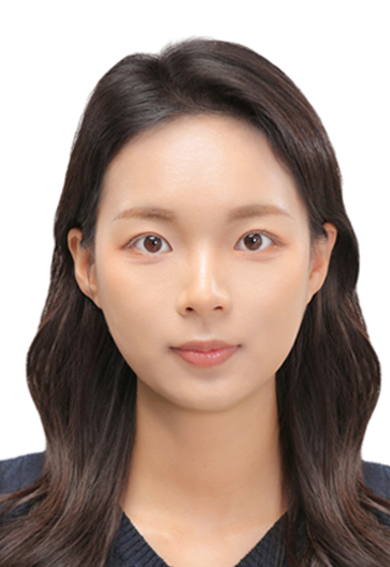

Liu, A., Kwon, S.-Y., Shao, W., & Kam, J. (2023). Monitoring the impact of climate extremes and COVID-19 on statewise sentiment alterations in water pollution complaints. npj Clean Water, 6, 29. DOI
Published
Anqi Liu
Postdoctoral Researcher
Hydro-climatology Research Lab
POSTECH
Pohang, South Korea
Welcome to Anqi Liu's Homepage!
I am currently working as a Postdoctoral Researcher in the Hydro-climatology Research Lab at Pohang University of Science and Technology (POSTECH) , South Korea.
My research focuses on the impacts of climatic extremes and pandemics on public water-pollution complaints. I use socio-hydrology, natural language processing, machine learning, geospatial analysis, and large-scale environmental data to understand public sentiment, environmental risks, social vulnerability, and environmental justice.
My work connects physical environmental conditions with public responses,
helping identify emerging risks and disparities that may not be captured by
conventional monitoring systems alone.
Research Interests
My primary research interests lie at the intersection of hydrology, artificial intelligence, public response, and environmental risk:
-
Socio-hydrology
- Public responses to water-related environmental risks
- Social sensing of droughts, floods, and water pollution
-
Climatic Extremes
- Drought and flood impacts
- Climate–society interactions
-
Natural Language Processing and Machine Learning
- Sentiment and emotion analysis
- Topic modeling and text classification
- Environmental complaint and media analysis
- Environmental Justice and Social Vulnerability
- Public Health and Environmental Risk Communication
Education
2026
Ph.D. Candidate, Hydro-climatology Research Lab
Pohang University of Science and Technology (POSTECH), South Korea
Advisor: Prof. Jonghun Kam
Research contents: Impacts of Climatic Extremes and Pandemic on the Public's Water Pollution Complaints
2020
M.Eng. in Environmental Engineering and Project Management
University of Leeds, United Kingdom
Advisor: Prof. Mark Trigg
Research contents: Impact of Dam Breach Flood
2019
B.Eng. in Hydrology and Water Resources Management
China Three Gorges University, China
Publications
Choi, S., Liu, A. (Co-first author), Lee, S., Yoon, H., & Kam, J. (2026). The interplay of news media, social media, and public search behavior during the 2022–2023 South Korea drought. Humanities and Social Sciences Communications. DOI
PublishedLiu, A., & Kam, J. (2026). Assessing the Psychological and Behavioral Impacts of Water-Related Disasters through AI-Based Analysis of Municipal Complaints. Environmental Research Communications. DOI
PublishedYang, G., Zhang, L., Kam, J., Zheng, Y., Wang, Y., Guo, A., Hussain, A., Liu, A., & Chang, J. (2025). Harnessing deep learning for dual gains in S2S-scale soil moisture forecasting and flash drought mechanisms. Water Resources Research. DOI
PublishedLiu, A., & Shao, W., Kam, J. How did COVID-19 reshape the narratives of the narratives of water complaints?.
In submissionLiu, A., & Kam, J. Socio-demographic and regional patterns of suicide in Alabama under severe droughts.
In preparationLiu, A., Shao, W., & Kam, J. Interstate differences in municipal complaints during and after the COVID-19 pandemic.
In preparationSelected Conference Presentations
Liu, A., Kwon, S.-Y., Shao, W., & Kam, J. “What Matters When the Public Report Water Pollution Complaints? A Case Study of Alabama (2012–2021).” AGU24, Washington, D.C., December 2024.
PosterChoi, S., Liu, A., & Kam, J. “Emerging Role of AI in Emotion-Focused Coping for Drought.” AGU24, Washington, D.C., December 2024.
PosterLiu, A., Kwon, S.-Y., Shao, W., & Kam, J. “Monitoring the Impact of Climate Extremes and COVID-19 on the Public’s Sentiment Alteration in Water Pollution Complaints.” AOGS Annual Meeting 2024, Pyeongchang, June 2024.
OralLiu, A., & Kam, J. “Emotion Shifts Between Multiple Environmental Mediums During Climate and COVID Extremes in Arkansas State.” Korea Water Resources Association Conference, Jeju Island, May 2024.
OralLiu, A., & Kam, J. “Trend and Sentiment Analysis in Water Complaints: A Case Study of Alabama, U.S.” AGU23, Online, December 2023.
PosterLiu, A., & Kam, J. “Understanding the Aggregate Behavior Pattern of Environmental Complaints from the Lens of Big Data.” AGU21, Online, December 2021.
OralLanguages
- Mandarin — Native
- English — Fluent
- Korean — Fluent
- Japanese — Basic
Personal Interests
Calligraphy, badminton, and drawing